My goal in the next few years is to establish a career in machine learning or artificial intelligence. Machine Learning can be used to make predictions to help improve and optimize metrics in a variety of fields, including sports, health systems, and economics. Artificial Intelligence uses technology to perform human-like tasks, making life for the average person a bit simpler. A career in either one of these specific fields would give me the opportunity to help improve aspects of life that matter the most to me.
Family and Home
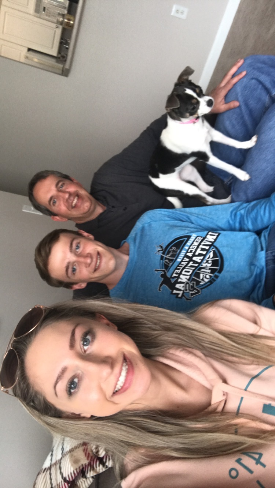
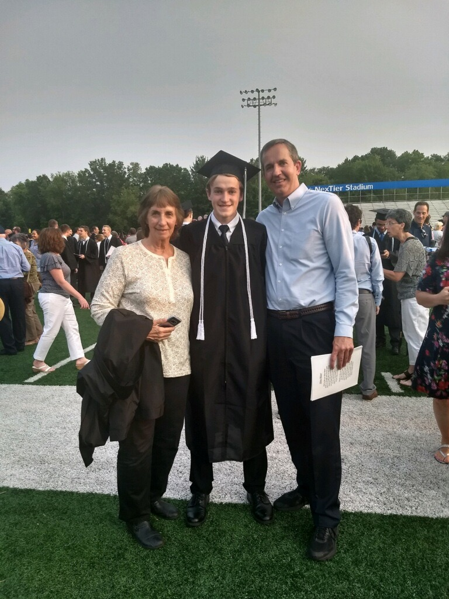
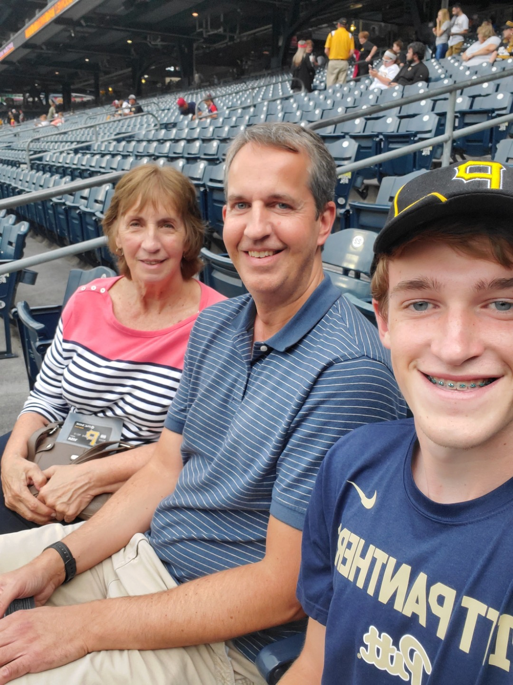
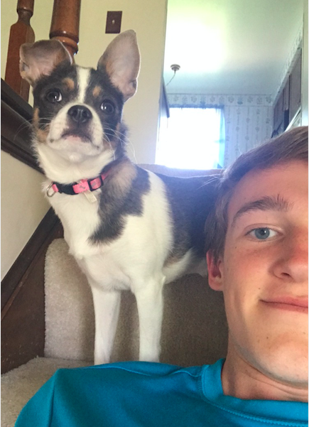
My family means the world to me! I have the best parents, an older sister, and the cutest chihuahua named Lilly.
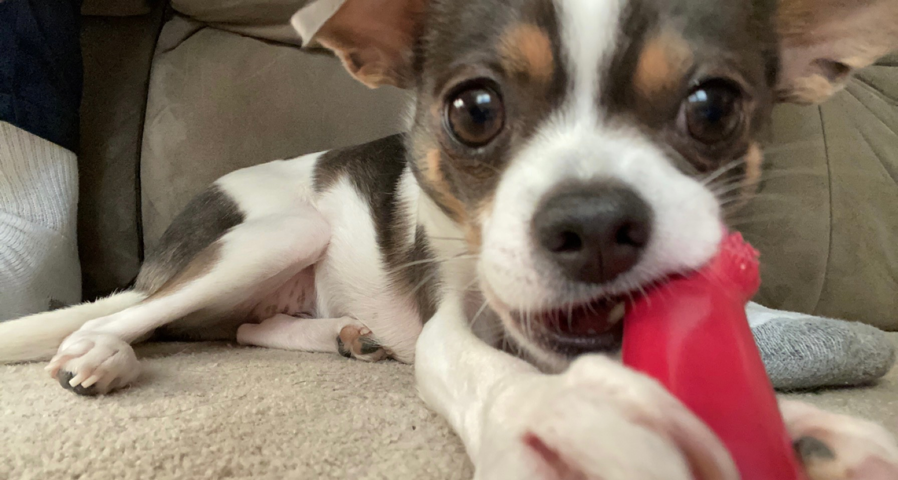
Entertainment
Sports have always been an important part of my life. When I was very young, I started playing lots of team sports, including baseball, soccer, and basketball. As I grew older, I began to focus on individual sports, such as distance running, biking, and disc golf.
I now play disc golf more than any other sport. I started in 2019 when my friend Jarrett took me to a local course and taught me how to play. I have participated in many tournaments around the Pittsburgh area and hope to oneday create a memorable moment for myself at the World Championships, just as James Conrad did on this historic shot.
Here are some photos of me, in action, playing several different sports.
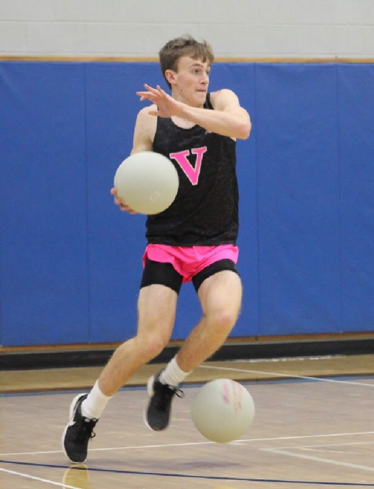
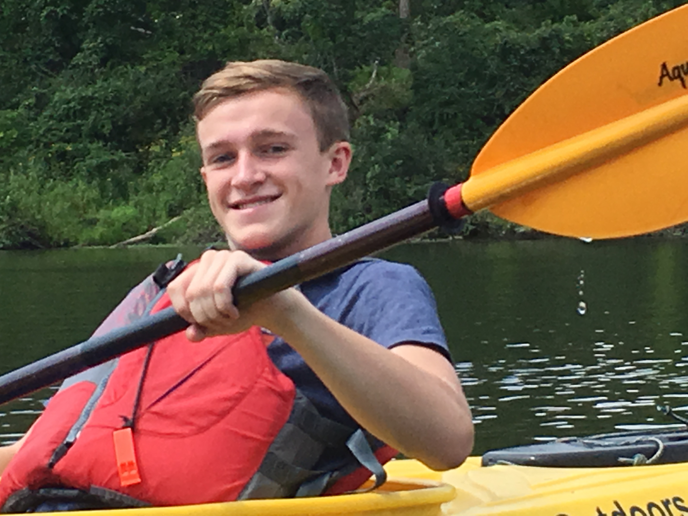
Whenever I get free time between my studies, I get as much exercise as possible. As I look toward my future, I hope to stay in my best shape by running often and to become a professional disc golf player, competing on the national tour.
Community
I gravitate towards others with the same values and morals as myself. I was part of a youth group at my church throughout high school, and now we do Bible studies.
When you surround yourself with people who focus on all the good in life and live every day to the fullest, you feel motivation to be your best self. These are the people I choose to be around, and I enjoy the love they show for everyone and everything.
School
I went to Seneca Valley High School. The knowledge I gained in highschool was intrumental to my success here at Pitt. Seneca Valley had some wonderful teachers and programs that helped me succeed inside and outside of the classroom.
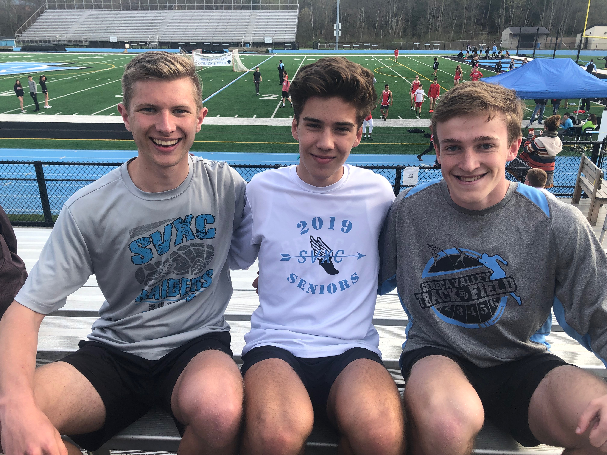
Now, I am a junior at the University of Pittsburgh majoring in Computer Science, and I have a minor in mathematics. I have been fascinated with math my entire life, so a minor in mathematics seemed necessary. I became interested in computer science in high school, and now I am well on my way to a career in a computer science field.
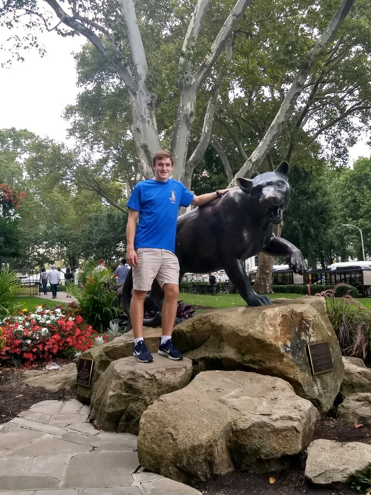
In the near future, I hope to complete a master's in computer science and get a job for a large tech company and perhaps do some research in artificial intelligence. However, I am open to any sort of career my degree might bring.
 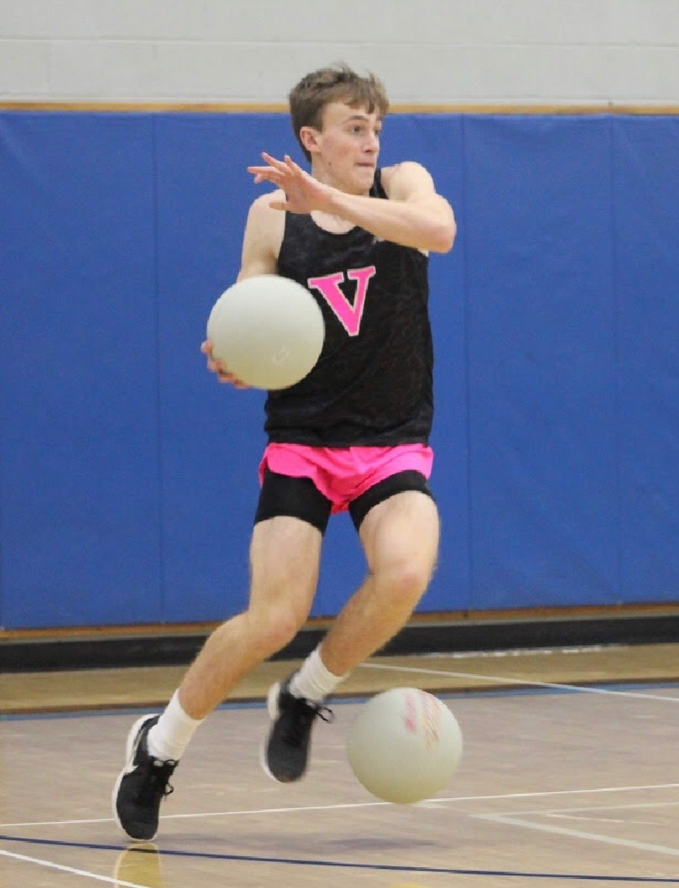
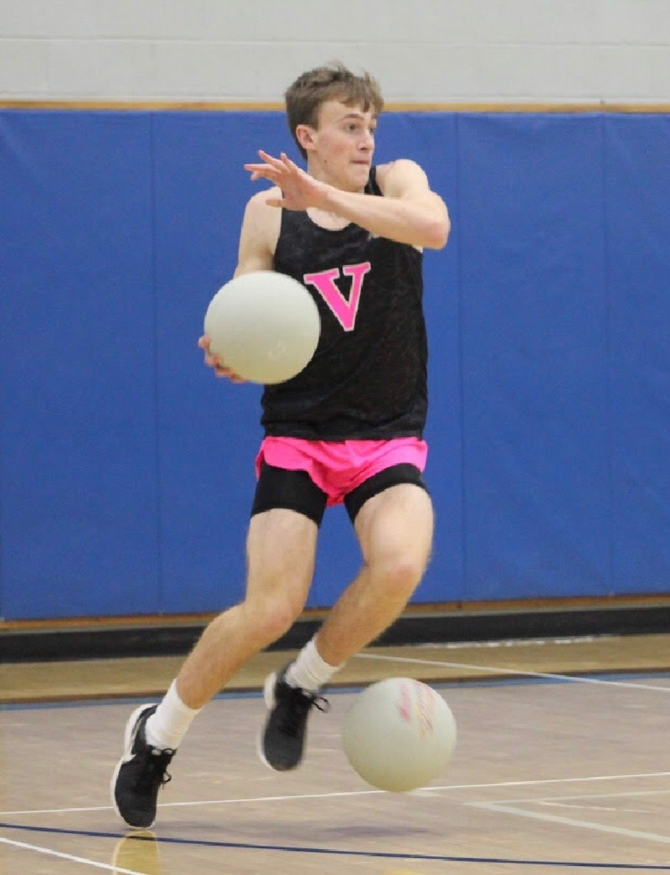